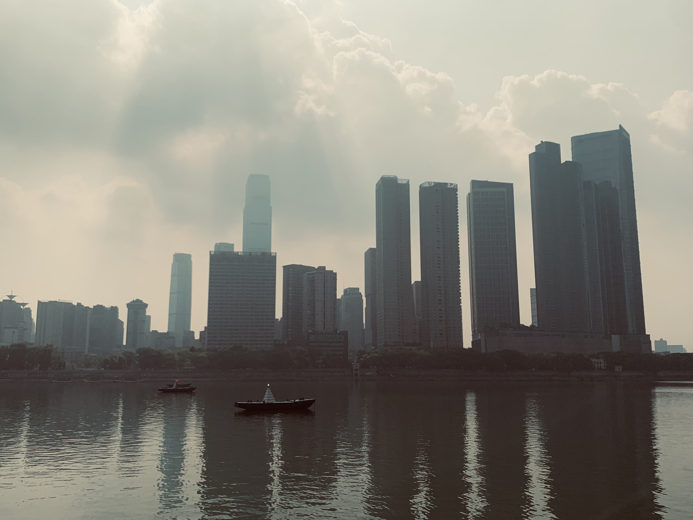

长沙行
2022.8.10
 没完没了的疫情将人困在了南方。回家之前临时兴起，看了看高德地图上周围还没有去过的地方，决定跑一趟长沙。起初心心念念想来长沙其实只是为了过把嘴瘾：当然这种游历吃喝的旅行和别人一起或许能更有意趣。不想如今条件限制，该死的疫情打乱了整个假期计划。为了不给别人再添麻烦，也就一人动身启程了。决定的当天买了高铁票，思索再三定了个稍微上档次的酒店决定去体验一番。
没完没了的疫情将人困在了南方。回家之前临时兴起，看了看高德地图上周围还没有去过的地方，决定跑一趟长沙。起初心心念念想来长沙其实只是为了过把嘴瘾：当然这种游历吃喝的旅行和别人一起或许能更有意趣。不想如今条件限制，该死的疫情打乱了整个假期计划。为了不给别人再添麻烦，也就一人动身启程了。决定的当天买了高铁票，思索再三定了个稍微上档次的酒店决定去体验一番。
在高铁上百无聊赖，依旧是戴着耳机目不转睛看着外面的水田飞驰而过。当晚即到达目的地。长沙给人的感觉完全是一座典型的南方城市：烈日之下潮湿的空气让人走不了几步就已经汗流浃背。不过归功于在南方呆久了锻炼了自己抗热的能耐，好像并没有预想中酷暑难耐的感觉，戴顶帽子甚至连防晒霜都不用涂了。或许“一方水土养一方人”总有自己的道理，包里的仁丹一粒都不用吃了。
 旅途稍短，二话不说直接奔向长沙小吃最多的地方：太平街。太平街算是这座城最为热闹之处。像重庆磁器口、南京夫子庙或者成都宽窄巷子一样，不高的两排阁楼叫卖声连连，五步一家茶颜悦色，十步一家黑色经典臭豆腐。奇妙的是尽管门店数量不少，依旧是家家店前门庭若市，拥挤着男女老少各个年龄段的人——似乎这两样东西已经深深与这里人们的生活挂钩，就像是在兰州，牛肉面馆开了满大街，却鲜能找到一家吃面完全不用找座的馆子。
旅途稍短，二话不说直接奔向长沙小吃最多的地方：太平街。太平街算是这座城最为热闹之处。像重庆磁器口、南京夫子庙或者成都宽窄巷子一样，不高的两排阁楼叫卖声连连，五步一家茶颜悦色，十步一家黑色经典臭豆腐。奇妙的是尽管门店数量不少，依旧是家家店前门庭若市，拥挤着男女老少各个年龄段的人——似乎这两样东西已经深深与这里人们的生活挂钩，就像是在兰州，牛肉面馆开了满大街，却鲜能找到一家吃面完全不用找座的馆子。
在长沙，王昱森经历了许多别样的体验：落地当晚找了家粉店，无知者无畏，自信地像往常一样往里面加了一勺子辣子：而结果就是嗦了一半就灰溜溜提着包跑出了店；原来臭豆腐闻起来臭，吃起来也是臭的。吃过之后戴上口罩，嘴里的味道实在让人窒息——试过几家横向对比，果然外地人去的多的店（比如火宫殿）做的臭豆腐味儿的确更平淡一些。关于小龙虾和剁椒鱼头，专门去找了晚上摆摊当地人聚会的地方。边吃还边和朋友吹嘘，我真能干，一个人消灭了一斤半小龙虾，两只手戴着手套没办法拿筷子，干脆用手抓着米饭塞了。小龙虾竟也能用茶叶炒，而剁椒鱼头，跟当地人聊说配上剁椒放进竹笼蒸才最正宗，也算是涨了见识。
 当然，在一天之内下肚了两杯茶颜，两份臭豆腐，两串大香肠，一杯星巴克，一盘小龙虾之后，肚子不出所料地崩了，夜不能寐。机智如我出学校前揣了几板黄连素，奈何第二天还是管不住嘴又找吃的去了。
当然，在一天之内下肚了两杯茶颜，两份臭豆腐，两串大香肠，一杯星巴克，一盘小龙虾之后，肚子不出所料地崩了，夜不能寐。机智如我出学校前揣了几板黄连素，奈何第二天还是管不住嘴又找吃的去了。
长沙由一条湘江隔开，江的那边是岳麓山和几所高校，江的这边是最热闹繁华的解放西：我好像一直都很喜欢这种城市所具有的“割裂”感，可能因为自己性格里也是一个“割裂”的矛盾体。安静与喧嚣用一条江相隔，江水带走了时间、带走了喧嚣，细细琢磨还有些浪漫色彩。这次没上岳麓山看看，从山上俯瞰城市总会心旷神怡的登高豪迈之感：也许面对繁华并不一定要置身其中。
不知道从什么时候开始特别喜欢拍日落，总觉得水天交接的暖色调会给人以无尽的宽慰。晚上回宾馆前经过国金中心，豪华的装修和金碧辉煌的陈设让人赞叹不绝。巧合的是，大楼的对面又是两队长长的队伍——一队在等臭豆腐，一队在等茶颜悦色。心血来潮，排队又买了一盒臭豆腐，不过这次就让巴黎世家、华伦天奴和爱马仕当一回臭豆腐的背景板吧，毕竟这样的高楼大厦可能代表不了这座城市，小小的黑豆腐块才能让你感叹这趟没白来。
 在长沙的最后一天只有半天，决定去瞻仰一下伟人。不巧碰上轻度雾霾，阳光被散射后细细碎碎洒在江面上。我并没有坐观光车，而是戴上了耳机，手机又放起了百听不厌的1989，一个人走在橘子洲的步道上。伴着江边的清风还有一列列观光车呼啸而过的声音，踏着节奏两万步甚至都不会累。伟人果然不同于常人，从主席的眼中总能感受到一种平和之外的志存高远，在橘子洲头望向遥远的天边。刚走过十分钟后又忍不住重新回来瞻仰一次主席。
坐飞机之前，工信部来短信说域名审核过了，于是赶紧做了解析把自己的网站弄了弄，大体来说是个框架，很多内容还没有填充进去。如今自己有了更多的时间，也就能多做些自己真正喜欢的事儿。不过想干的都是耗时的活，以后的事也只能说计划不如变化吧。